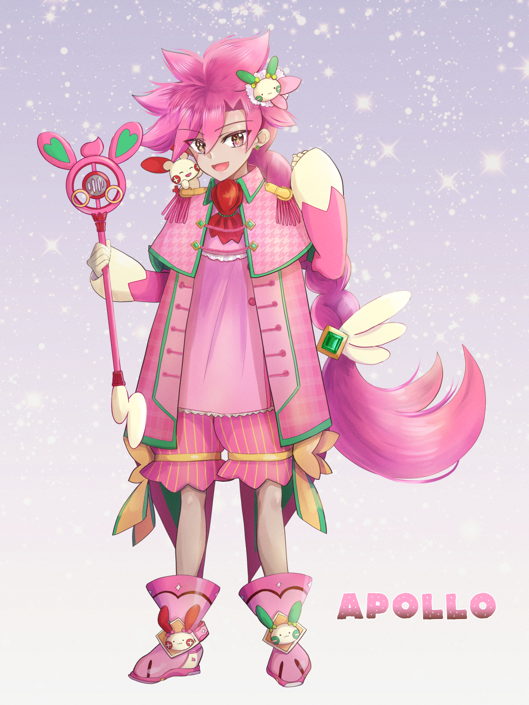
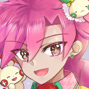

名前
アポロ・ジャンドゥーヤ
原型 / 性別
★パlーlモlッlト♂
学年 / 年齢
3年生 / 18歳
身長
156cm
一人称 / 二人称
僕 / 呼び捨て、～さん
参考台詞
「ハーッハッハ！この学園もすぐに掌握してやるぜ！」
「だいすきだよ、ママたち、パパたち」
「２人とも…それ以上は特訓のやりすぎだ！もうやめるんだッ！！」
やんちゃな性格。運動神経がいい。野心家。
祖国で国民的アイドル【Chocho Souris】（愛称：チュチュ３）の１人。
パッション担当。事務所の方針で『他国にも進出していこう』という理由でこの度留学してきた。
赤ん坊の頃から祖国で芸能活動を続けており、子役やダンサーとして活躍していた。
３人でユニットを組んでアイドル活動をしたところ、祖国で大成功。
スポーツ選手顔負けの運動神経と快活な性格でユニットを盛り上げている。
落ち着きがあまりなく自由時間はそわそわと歩き回っていることが多い。歩くと靴がキュッキュッと鳴る。
勉強はそんなに得意ではないものの、アイドル活動に支障が出ないように、授業中にしっかり要点を抑えている。
触媒は髪飾りの宝石。魔力を保管しやすい電気の形で保つことができる。
持ち歩くぬいぐるみに体にたまった電気を送り、動かすことができる。
♡ ♡ ♡
Chouchou Souris:シュシュ スウリー
Chouchou:お気に入りの
Souris:（小さめの）ネズミ
メンバー３人で２匹の使い魔を連れている。
マlスlカlーlニlャ … 社長
ミlミlッlキlュ … マネージャー
ファンのことを「パパ」「ママ」と呼んでいる。
絡みについて
※親が手一杯なので、新規うちよそ（深い仲）の募集を停止しています。その他引き続き遊んでください！
リコリス＠るくさん
フラン＠李空さん
アイドルユニット「Chocho Souris」のメンバー。一緒に留学してきた。努力家でストイックな２人のことを好ましく思っているが、度がすぎることも多い２人の体調ケアも行っている。（再起の祈り）
★【
頂いた絡みまとめ
】
連絡先
ＨＮ：黒ばなな
twitter：
oxoxoxoxo
作品置き場
